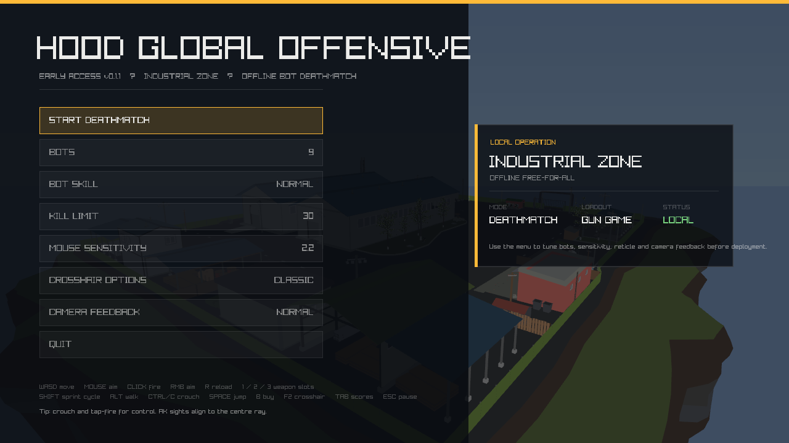
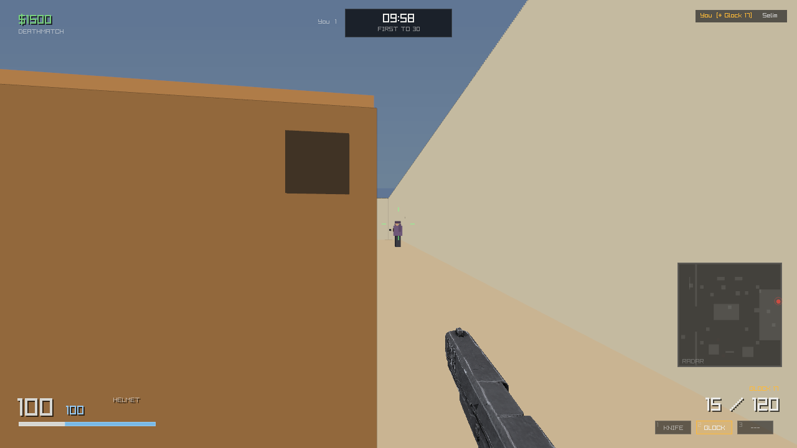
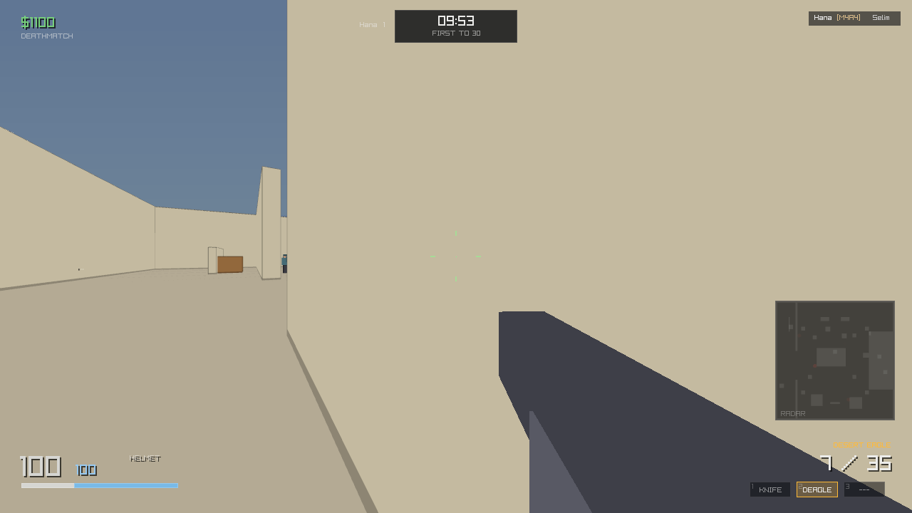
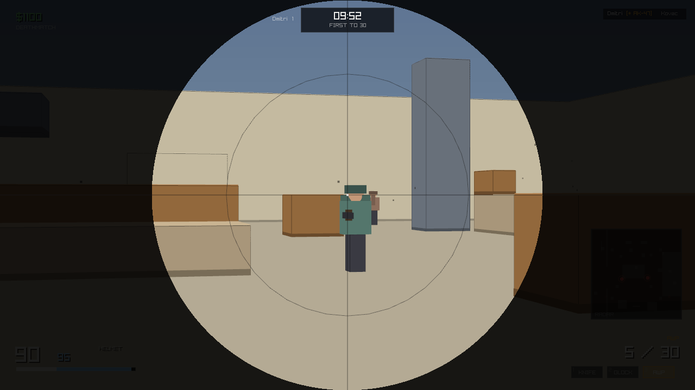
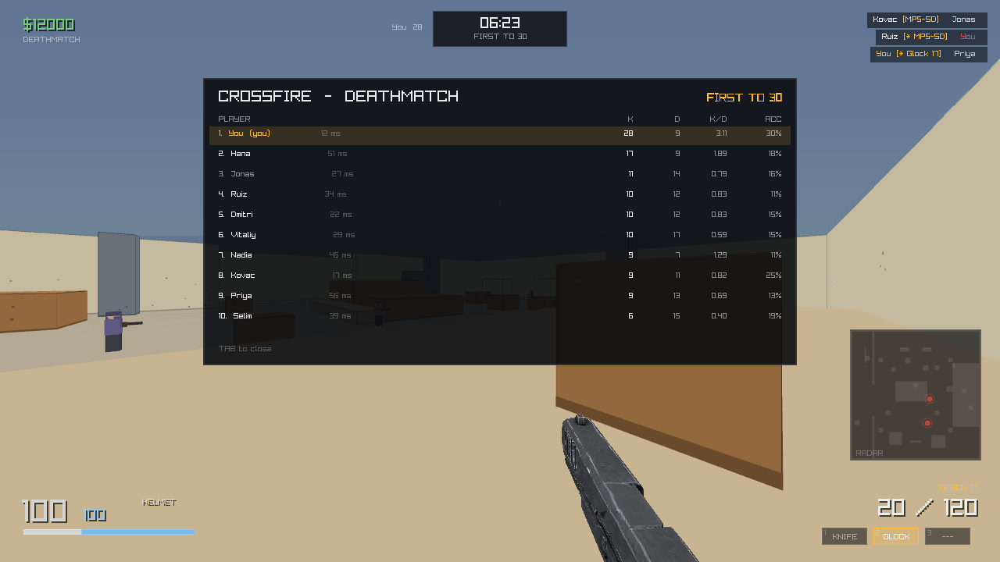

Early access v0.1.0 · a Counter-Strike style deathmatch FPS in C# on Raylib-cs · map: Crossfire
Every frame below is rendered by the real game. Regenerate with bash tools/capture_shots.sh, then check them with python tools/verify_shots.py.

Main menu. Bot count, bot skill, kill limit and mouse sensitivity are all set here before you start.AK-47 in a firefight. The view model is rendered in its own pass, so level geometry can never hide it, even pressed against a wall.

Glock 17. The default sidearm is the one weapon drawn from a real mesh rather than from boxes. Its placement - scale, centre and bore line - is measured from the model at load time.

Desert Eagle. The crosshair gap is driven by the live spread value, so it opens as you move and tightens when you crouch.

AWP scoped. Right click raises the scope, the weapon is fully stowed while it is up, and the mask darkens everything outside the circle.Buy menu (B). Money comes from kills, so buying is a real decision rather than a formality.

Scoreboard (hold Tab). Kills, deaths, accuracy and headshot counts for you and every bot.
These captures are produced by running real matches and rendering a single frame, so nothing here is a mock-up. The scoped frame in particular waits until the scope is at least 97% raised before capturing.